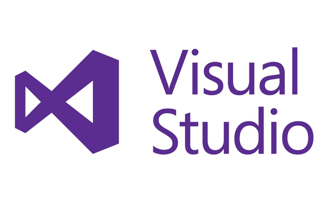

PRESENTATION
Ce logiciel permet de faire des Ajouts,
Utilisations, Modifications de la base de
données
crée via le
service
MongoDB.
MongoDB est une base de données orientée
documents. En clair, vous bénéficiez de la scalabilité et de la flexibilité que vous voulez,
avec les fonctions d’interrogation et d’indexation qu’il vous faut.
Dans son ensemble le logiciel va utiliser la
bibliothèque de MongoDB pour se connecter à la base de données en envoyant des requêtes
GET/POST.
Lors de la connexion vers le serveur, MongoDB
va récuperer les identifiants de connexion (token).
- Le logiciel peut éventuellement générer
des
token.
- Afficher les informations des
utilisateurs
en triant par genre.
- Générer plusieurs licences à la
fois.
- Afficher les informations clients déjà
existante.
- Modifier les informations clients si
besoin.
- Déchiffrer/Chiffrer l'intégralité de la
base de données.
- Supprimer les informations des
utilisateurs.
- Supprimer complètement toute la base de
données.
- Purger les licences qui sont expirées
depuis
24H.
Le programme utilise la méthode de chiffrement
AES pour bénéficier de la meilleure protection possible à l'heure actuelle.
Bien évidemment les clefs de chiffrement sont
cachées à l'oeil du client et sont renforcées de façon à ce qu'une attaque par force brute ne
puisse pas être utilisée.
Objectif personnel
Ce projet m'a permis de découvrir comment
fonctionnait une base de données dans son intégralité puis de connaitre le service MongoDB et
tout son fonctionnement.
La création d'un logiciel qui permet de gérer la base de données sans utiliser la page de
connexion de MongoDB.
LES LOGICIELS UTILISES

MONGODB
MongoDB (de l'anglais humongous qui peut être
traduit par « énorme ») est un système de gestion de base de données orienté documents,
répartissable sur un nombre quelconque d'ordinateurs et ne nécessitant pas de schéma
prédéfini des données.

VISUAL STUDIO
Visual Studio est un
ensemble
complet d'outils de
développement permettant de générer des applications web ASP.NET, des services web XML, des
applications bureautiques et des applications mobiles. Visual Basic, Visual C++, Visual C#
utilisent tous le même environnement de développement intégré (IDE), qui leur permet de
partager
des outils et facilite la création de solutions faisant appel à plusieurs langages.
LES LANGUES UTILISES

C#
C# est un langage de programmation orientée
objet,
fortement typé, dérivé de C et de C++, ressemblant au langage Java3. Il est utilisé pour
développer des applications web, ainsi que des applications de bureau, des services web, des
commandes, des widgets ou des bibliothèques de classes3. En C#, une application est un lot
de
classes où une des classes comporte une méthode Main, comme cela se fait en Java3.